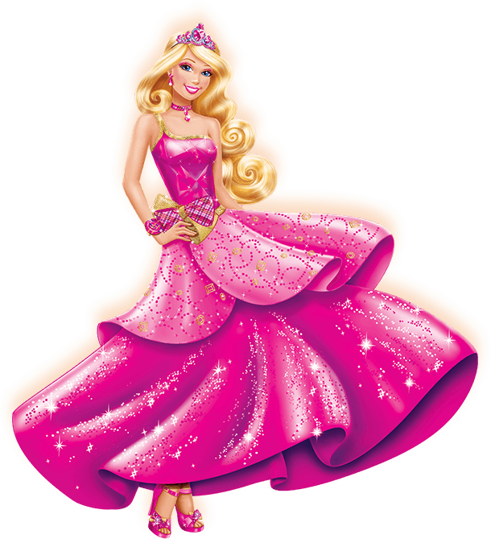
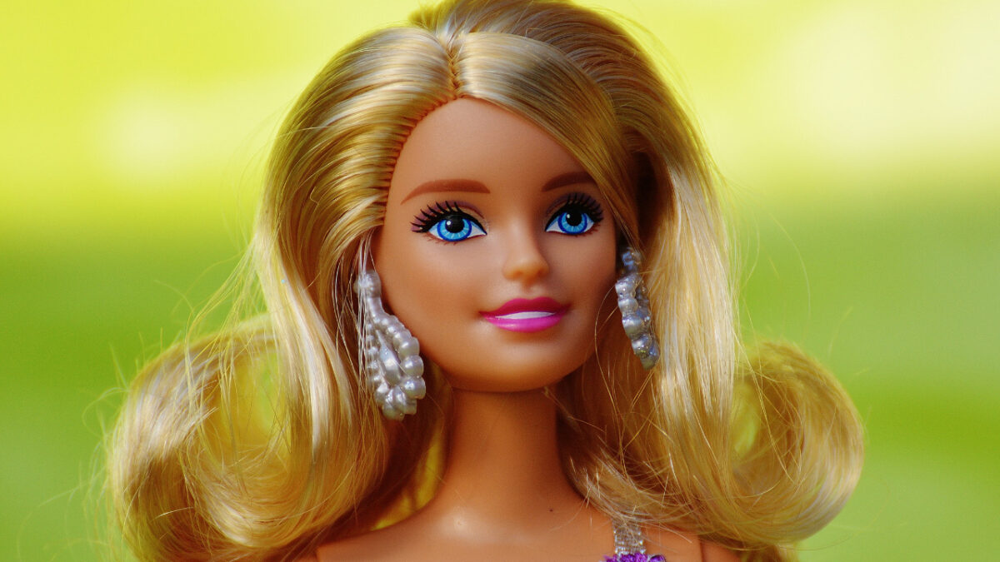

Barbie
História da Barbie
A Barbie foi lançada em 9 de março de 1959 por Ruth Handler, co-fundadora da Mattel, durante a Feira de Brinquedos de Nova York. Desde então, Barbie tem inspirado milhões de crianças a sonhar grande e explorar seu potencial.
Originalmente, Barbie foi concebida como uma "manequim adolescente" e seu nome completo é Barbara Millicent Roberts.
Filmes da Barbie
Ao longo dos anos, Barbie estrelou mais de 40 filmes animados, começando com "Barbie em Quebra-Nozes" em 2001. Esses filmes variam de contos de fadas a aventuras modernas, sempre com mensagens positivas de amizade, coragem e autoconfiança.
- Barbie em Quebra-Nozes (2001)
- Barbie como Rapunzel (2002)
- Barbie: Lago dos Cisnes (2003)
- Barbie como A Princesa e a Plebéia (2004)
- Barbie Fairytopia (2005)
- Barbie e a Magia de Aladus (2005)
- Barbie Diaries (2006)
- Barbie Fairytopia Mermaidia (2006)
- Barbie em As 12 Princesas Bailarinas (2006)
- Barbie Fairytopia: A Magia do Arco-Íris (2007)
- Barbie e o Castelo de Diamante (2008)
- Barbie em A Pequena Polegarzinha (2009)
- Barbie e as Três Mosqueteiras (2009)
- Barbie em Uma Aventura de Natal (2008)
- Barbie em Vida de Sereia (2010)
- Barbie em Moda e Magia (2010)
- Barbie em Um Natal Perfeito (2011)
- Barbie: Escola de Princesas (2011)
- Barbie e as Suas Irmãs em Uma Aventura de Cavalos (2013)
- Barbie: Vida de Sereia 2 (2012)
- Barbie e as Suas Irmãs em Um Natal Perfeito (2015)
- Barbie: Princesa e a Popstar (2012)
- Barbie e a Porta Secreta (2014)
- Barbie em Super Princesa (2015)
- Barbie em Rock’n Royals (2015)
- Barbie e as Agentes Secretas (2016)
- Barbie e os Golfinhos Mágicos (2017)
- Barbie Dreamtopia (2017)
- Barbie: Aventura nas Estrelas (2017)
- Barbie Dreamhouse Adventures (2018)
- Barbie Princess Adventure (2020)
- Barbie & Chelsea: O Aniversário Perdido (2021)
- Barbie: Grande Cidade, Grandes Sonhos (2021)
- Barbie: Mermaid Power (2022)
- E mais outros filmes não listados.
Personagens do Mundo Barbie
A Barbie tem muitos amigos e familiares que aparecem ao longo dos anos em várias histórias, incluindo:
- Ken Carson: O namorado de longa data da Barbie.
- Skipper Roberts: A irmã mais nova de Barbie.
- Stacie Roberts: Outra irmã de Barbie, conhecida por sua personalidade aventureira.
- Kelly Roberts: A irmã caçula de Barbie.
- Margaret Roberts: A mãe de Barbie.
- George Roberts: O pai de Barbie.
- Teresa Rivera: Melhor amiga da Barbie.
- Raquelle: Uma rival ocasional de Barbie.
- Christie: Uma das primeiras amigas de Barbie, introduzida em 1968.
- Midge Hadley: Amiga de Barbie desde os anos 1960.
- Allan Sherwood: Amigo de Ken.
- Steven: Amigo de Barbie.
- Blissa: O gato de estimação de Barbie.
- Taffy: O cachorro de estimação de Barbie.
Curiosidades
- Barbie já teve mais de 200 profissões, incluindo astronauta, presidente, médica e engenheira de computação.
- Se a Barbie fosse uma pessoa real, ela teria aproximadamente 1,75m de altura.
- O primeiro carro da Barbie, um Austin Healey, foi lançado em 1962.
- A cada minuto, são vendidas cerca de 100 bonecas Barbie no mundo.
- Barbie já visitou todos os continentes e até foi ao espaço em 1965.
- O nome completo da Barbie é Barbara Millicent Roberts.
- A boneca foi inspirada em uma boneca alemã chamada Bild Lilli.
- A Barbie é fabricada em vários tamanhos e formatos desde 2016 para promover a inclusão e a diversidade.